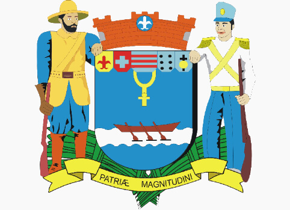

Sobre a
Cidade
Fins do século XVII fundado o povoado de Hepacaré ou Nossa Senhora da Piedade. Provisão de 1718 Cria a freguesia, com a denominação de Nossa Senhora da Piedade, no município de Guaratinguetá. Portaria de 06/07/1788 criada a vila com a denominação de Lorena. Decreto n" 80 de 18/06/1842 Anexa o município à Província do Rio de Janeiro. Decreto n" 21 6 de 29/08/1842 Anexa o município a Província de São Paulo. Lei n" 21 ou 541 de 24/04/1856 Recebe foros de cidade.
População em 2018: 88.276 habitantes
Área territorial: 414 km²
Data de Fundação da Cidade: 14 de novembro de 1788
Gentílico: Lorenense
Padroeiro(a): Nossa Senhora da Piedade
Diocese: Lorena
Bispo: Sede Vacante
